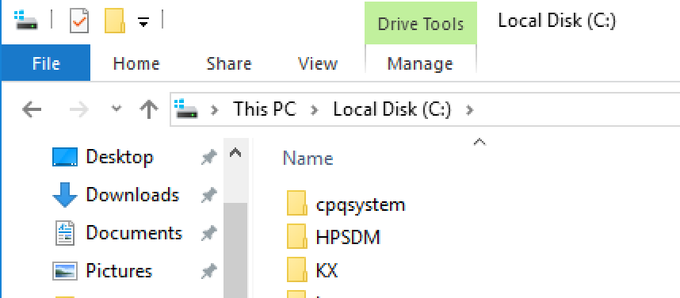
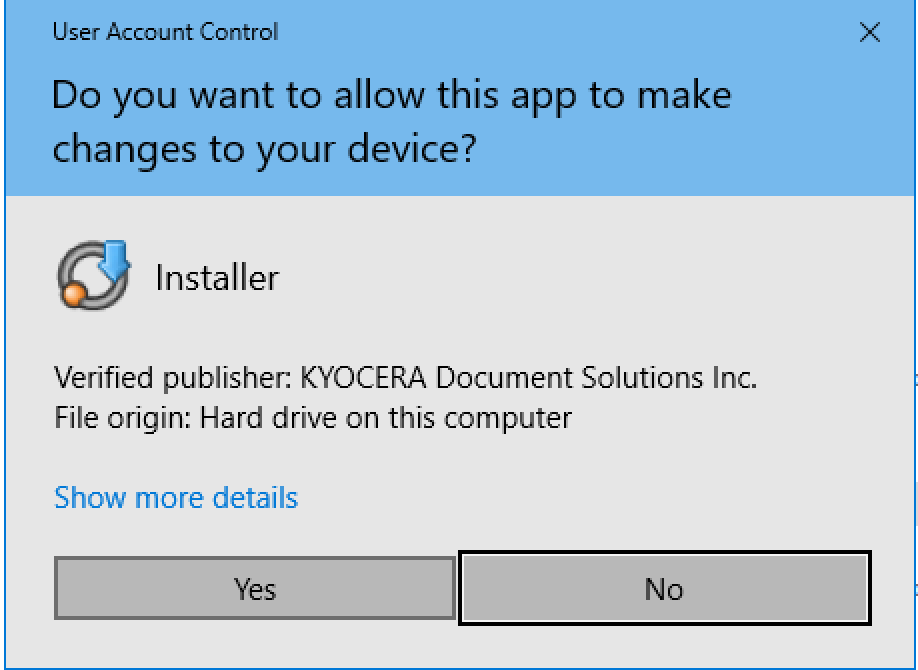
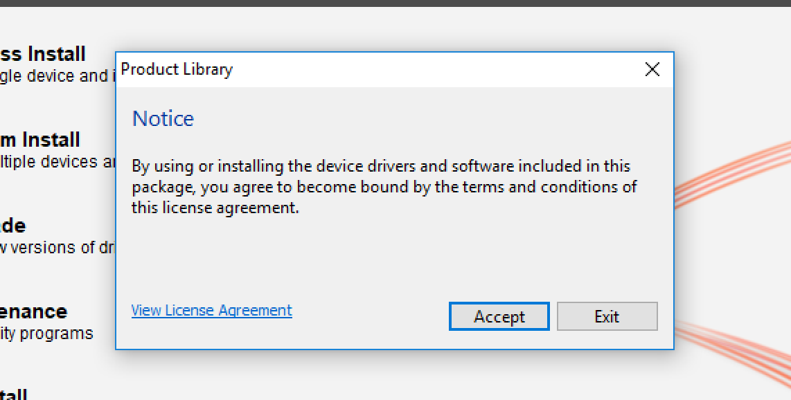
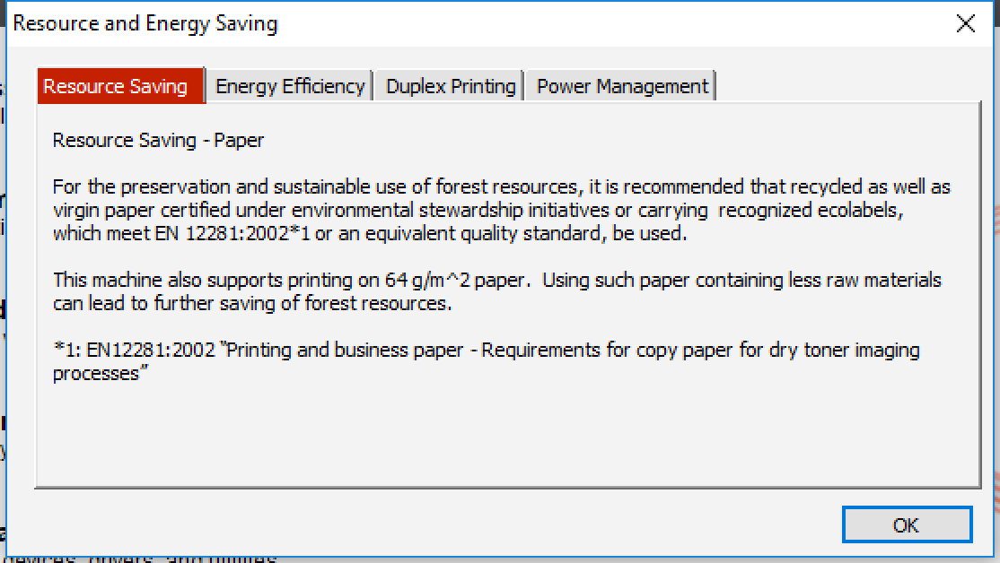
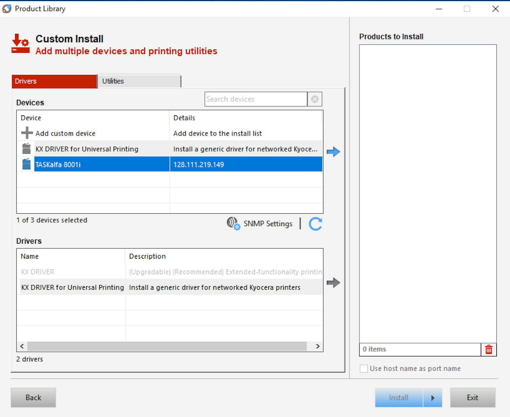
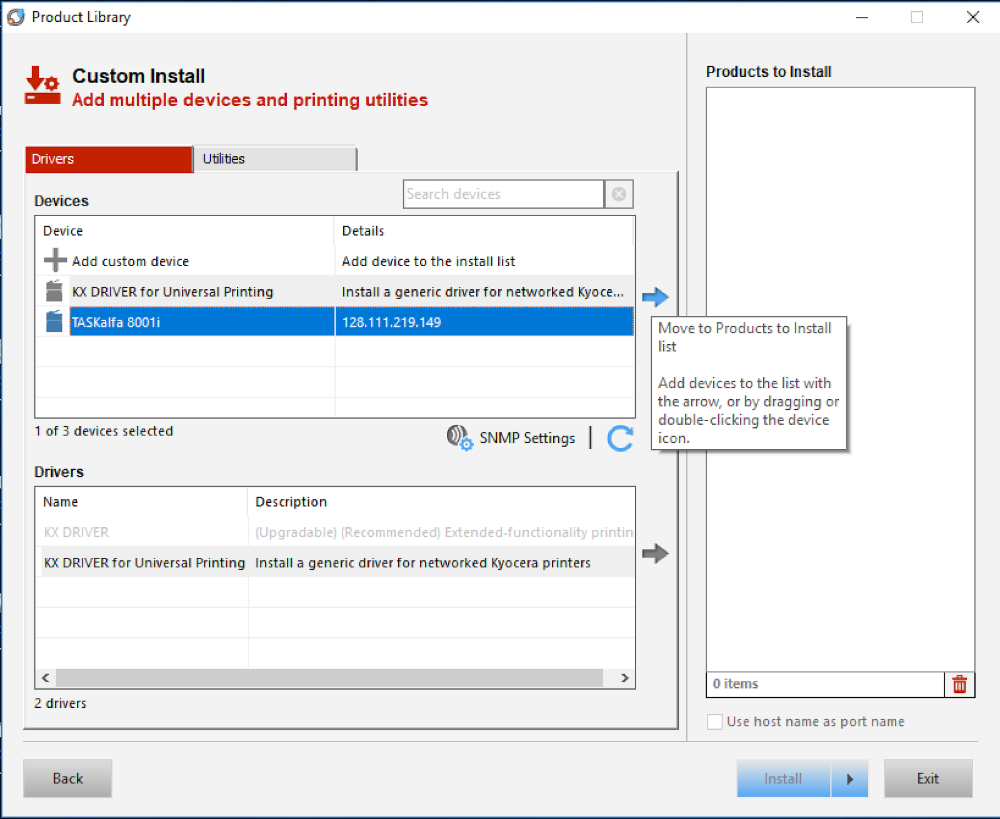
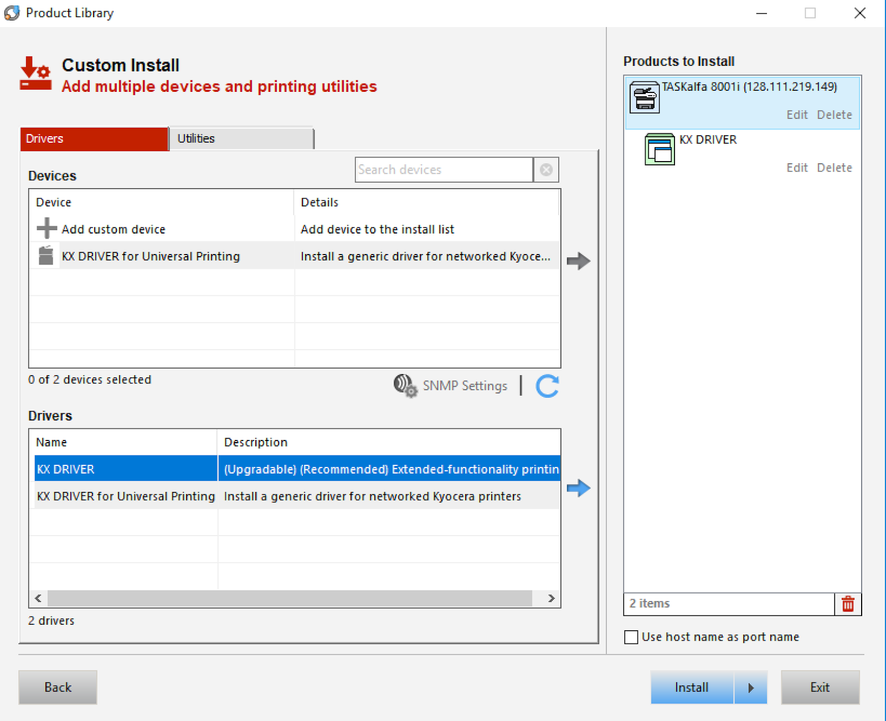

This tutorial will help you install drivers for the mailroom printer on your personal Windows machine.
Prereqs
- Download of Kyocera TASKalfa 8001i Windows driver
- Download the driver, uncompress it, and enter the folder within:

- Open up the "KX" folder and look for the "en" folder. Open it:

- In the "en" folder look for and open "KmInstall":

- Click 'Yes' to start the installer

- Click Accept

- Click "OK"

- Click Custom Install

- Now you may or may not see the TASKalfa 80001i in the list like it is below. If you don't see it then you will need to click on the '+' sign next to the words, "Add custom device"

- If you do have to click the '+' sign then you will be taken to the image below. On your system click on the above highlighted port name then click on "OK" to continue.

- Now make sure that TASKalfa 8001i is highlighted and click on the blue arrow to its right.

- Clicking on the blue arrow will move the install package over to the "Products to Install List":

- Now under drivers, click on the "KX Driver" NOT the "KX Driver for Universal Printing"

- Then click on the blue arrow to move the selected driver into the, "Products to Install"
